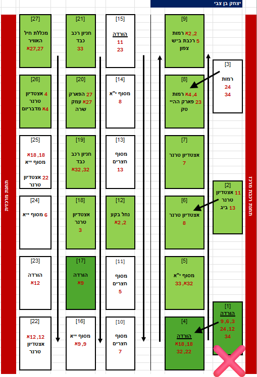
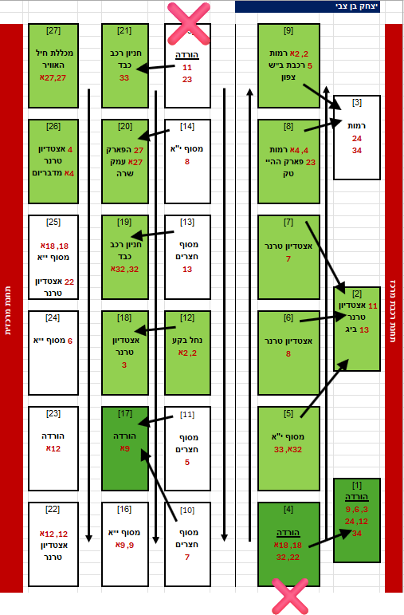

שינויים זמניים בסככות התחנה המרכזית
בחרו יום ואת מספר הקו — ותדעו מיד מאיזו סככה לעלות. העבודות מתוכננות בשעות 09:00–17:00.
בחרו יום נסיעה
איזה קו אתם מחפשים?
לדוגמה: 2, 2א, 13, טרנר, רמות, ביג, חצרים
הקווים ששמרתי
בחירה מהירה
מפת הסככות בתחנה המרכזית
כל מספר במפה מייצג סככה בתחנה. בחרו את הקו שלכם כדי לראות היכן נמצא הסככה המתאימה.
- סככה פעילה
- סככה סגורה
- הסככה שלך
- סככה מקורית שהוחלפה
תרשים לפי מפות דן באר שבע. הקו המחבר הוא סכמטי להתמצאות ואינו מסלול הליכה מאומת.
פירוט כל השינויים
מידע נוסף
צפייה במפות המקור


שעות העבודות: 09:00–17:00 בימים שני עד רביעי, 16–18.11.2026. שעת הסיום היא סיום העבודות היומי המתוכנן, ולא אישור מפורש להחזרת כל הסככות.
בשטח יש לעקוב אחר השילוט וההכוונה של העובדים והמפעילים. התשובה באתר מבוססת על הודעת השינויים ותרשימי הסככות הרשמיים.